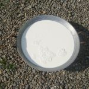

COCONUT

© FAO Jeanette-Van-Acker-FAO
History:

©FAORocco-Rorandelli-FAO
The origin of the plant is the subject of debate. O.F. Cook was one of the earliest modern researchers to draw conclusions about the location of origin of Cocos nucifera based on its current-day worldwide distribution. He hypothesized that the coconut originated in the Americas, based on his belief that American coconut populations predated European contact and because he considered pan-tropical distribution by ocean currents improbable. Thor Heyerdahl later used this hypothesis of the American origin of the coconut to support his theory that the Pacific Islanders originated in South America. However, more evidence exists for an Indo-Pacific origin either around Melanesia and Malesia or the Indian Ocean. The oldest fossils known of the modern coconut dating from the Eocene period from around 37 to 55 million years ago were found in Australia and India, but older palm fossils such as some of nipa fruit have been found in the Americas. A species with strawberry-sized nuts (Cocos zeylanica) lived in New Zealand in the Miocene. Since 1978, the work on tracing the probable origin and dispersal of Cocos nucifera has only recently been augmented by a publication on the germination rate of the coconut seednut and another on the importance of the coral atoll ecosystem. Briefly, the coconut originated in the coral atoll ecosystem — without human intervention — and required a thick husk and slow germination to survive and disperse. The spelling cocoanut is an archaic form of the word. The term is derived from the 16th-century Portuguese and Spanish word coco meaning "head" or "skull", from the three indentations on the coconut shell that resemble facial features.

©IFAD Joanne-Levitan
Characteristics:

©IFAD Robert-Grossman
This member of the palm family, which is native to Malaysia, yields fruit all year long. The coconut fruit is a drupe, not a true nut. Like other fruits, it has three layers: the exocarp, mesocarp, and endocarp. The exocarp and mesocarp make up the "husk" of the coconut. Coconuts sold in the shops of nontropical countries often have had the exocarp (outermost layer) removed. The mesocarp is composed of a fiber, called coir, which has many traditional and commercial uses. The shell has three germination pores (micropyles) or "eyes" that are clearly visible on its outside surface once the husk is removed. A full-sized coconut weighs about 1.44 kg (3.2 lb). It takes around 6,000 full-grown coconuts to produce a tonne of copra.
Food uses:

©IFAD GMB-Akash
Coconut is edible in both its green and mature forms. Both the water and the "jelly" of the green coconut find their way into island drinks, and meat from the mature coconut gives desserts a Caribbean identity. Coconut milk, not to be confused with coconut water, is obtained primarily by extracting juice by pressing the grated coconut white kernel or by passing hot water or milk through grated coconut, which extracts the oil and aromatic compounds. It has a total fat content of 24%, most of which (89%) is saturated fat, with lauric acid as a major fatty acid. When refrigerated and left to set, coconut cream will rise to the top and separate from the milk. The milk can be used to produce virgin coconut oil by controlled heating and removal of the oil fraction. Another byproduct of the coconut is coconut oil. It is commonly used in cooking, especially for frying. It can be used in liquid form as would other vegetable oils, or in solid form as would butter or lard. The sap derived from incising the flower clusters of the coconut is drunk as neera, also known as toddy or tuba (Philippines), tuak (Indonesia and Malaysia) or karewe (fresh and not fermented, collected twice a day, for breakfast and dinner) in Kiribati. When left to ferment on its own, it becomes palm wine. Palm wine is distilled to produce arrack. Apical buds of adult plants are edible, and are known as "palm cabbage" or heart of palm. They are considered a rare delicacy, as harvesting the buds kills the palms. Hearts of palm are eaten in salads, sometimes called "millionaire's salad".
Health & nutrition values:

©IFAD Joanne-Levitan
The coconut is known for its great versatility as seen in the many uses of its different parts and found throughout the tropics and subtropics. Coconuts are part of the daily diets of many people. Coconuts are different from any other fruits because they contain a large quantity of "water" and when immature they are known as tender-nuts or jelly-nuts and may be harvested for drinking. When mature, they still contain some water and can be used as seednuts or processed to give oil from the kernel, charcoal from the hard shell and coir from the fibrous husk. The oil and milk derived from it are commonly used in cooking and frying; coconut oil is also widely used in soaps and cosmetics. The clear liquid coconut water within is potable. Per 100 gram serving with 354 calories, raw coconut meat supplies a high amount of total fat (33 grams), especially saturated fat (89% of total fat) and carbohydrates (24 grams) (table). Micronutrients in significant content include the dietary minerals, manganese, iron, phosphorus and zinc. Per 100 gram (100 ml) serving, coconut water contains 19 calories and no significant content of essential nutrients. Coconut milk has a total fat content of 24%, most of which (89%) is saturated fat, with lauric acid as a major fatty acid. A protein-rich powder can be processed from coconut milk following centrifugation, separation and spray drying.

©IFAD Joanne-Levitan
Cultural Festival:
Coconut Festival http://www.cocofest.com/
References/Bibliography:
Coconut – Wikipedia Webpage https://en.wikipedia.org/wiki/Coconut
The Health Benefits of Coconut: Coconut Oil, Coconut Milk, Coconut Water, Coconut Flour & More http://www.eatingwell.com/nutrition_health/nutrition_news_information/health_benefits_of_coconut_coconut_oil_coconut_milk_coconut_water_coconut_flour